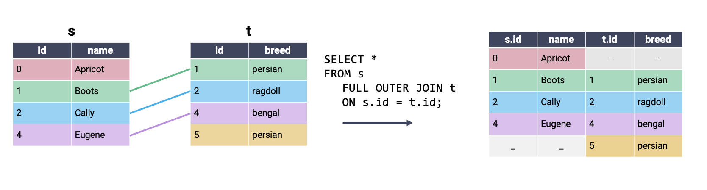
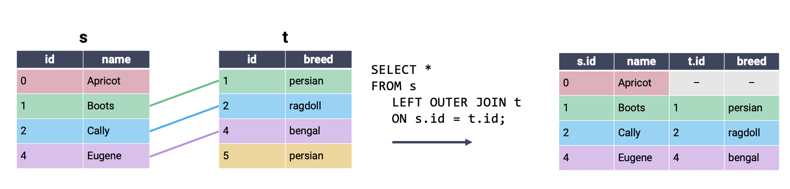

Perform data cleaning and text manipulation in SQL
Join data across tables
In this lecture, we’ll continue our work from last time to introduce some advanced SQL syntax.
21.0.1 Filtering with HAVING
Let’s return to our Dish table from the previous lecture.
Code
# Load the SQL Alchemy Python libraryimport sqlalchemyimport pandas as pdimport numpy as np# Create a SQL Alchemy connection to the databaseengine = sqlalchemy.create_engine("sqlite:///data/basic_examples.db")connection = engine.connect()# Query information from the databasequery ="""SELECT * FROM Dish;"""pd.read_sql(query, engine)
name
type
cost
0
ravioli
entree
10
1
ramen
entree
13
2
taco
entree
7
3
edamame
appetizer
4
4
fries
appetizer
4
5
potsticker
appetizer
4
6
ice cream
dessert
5
Often, we will only be interested in groups that share a certain characteristic. For example, we might only want to work with types where all dishes of that type cost less than $8.
When working with pandas, we used the .filter() method of GroupBy objects to filter out entire groups of data based on a given condition. In SQL, we can achieve something similar by using the HAVING clause. HAVING checks to see if all data across a group satisfies a certain condition. If this condition is met, the group is kept in the outputted data. If not, the group is excluded from the output.
Notice that all entrees have been excluded from the output table.
It can be helpful to read HAVING clauses this way: “give me all type groups having a maximum cost less than 8.”
You may ask: why couldn’t we have just used a WHERE clause here? It is important to remember that WHERE applies a condition to individual rows. We could, for example, use WHERE to filter rows that have particular values of cost. WHERE cannot, however, apply a condition across a group of many rows. Because WHERE only considers one row at a time, we would not be able to use it to filter on, say, the maximum cost across all rows in a group, or the sum of all costs across an entire group of records. HAVING allows us to apply a condition based on some aggregate value of a collection of grouped rows.
Let’s update our SQL order of operations.
SELECT <column list>
FROM <table>
[WHERE <predicate>]
[GROUP BY <column list>]
[HAVING <predicate>]
[ORDER BY <column list>]
[LIMIT <number of rows>]
[OFFSET <number of rows>]
21.1 EDA in SQL
In the last lecture, we mostly worked under the assumption that our data had already been cleaned. However, as we saw in our first pass through the data science lifecycle, we’re very unlikely to be given data that is free of formatting issues. With this in mind, we’ll want to learn how to clean and transform data in SQL.
Let’s consider the Title table from the imdbmini database.
Code
# Load the SQL Alchemy Python libraryimport sqlalchemyimport pandas as pd# Create a SQL Alchemy connection to the databaseengine = sqlalchemy.create_engine("sqlite:///data/imdbmini.db")connection = engine.connect()query ="""SELECT *FROM TitleLIMIT 5;"""pd.read_sql(query, engine)
tconst
titleType
primaryTitle
originalTitle
isAdult
startYear
endYear
runtimeMinutes
genres
0
417
short
A Trip to the Moon
Le voyage dans la lune
0
1902
None
13
Action,Adventure,Comedy
1
4972
movie
The Birth of a Nation
The Birth of a Nation
0
1915
None
195
Drama,History,War
2
10323
movie
The Cabinet of Dr. Caligari
Das Cabinet des Dr. Caligari
0
1920
None
76
Fantasy,Horror,Mystery
3
12349
movie
The Kid
The Kid
0
1921
None
68
Comedy,Drama,Family
4
13442
movie
Nosferatu
Nosferatu, eine Symphonie des Grauens
0
1922
None
94
Fantasy,Horror
21.1.1CASTing Data Types
A common data cleaning task is converting data to the correct variable type. The CAST keyword is used to generate a new output column. Each entry in this output column is the result of converting the data in an existing column to a new data type. For example, we may wish to convert numeric data stored as a string to an integer.
query ="""SELECT primaryTitle, CAST(runtimeMinutes AS INT), CAST(startYear AS INT)FROM TitleLIMIT 5;"""pd.read_sql(query, engine)
primaryTitle
CAST(runtimeMinutes AS INT)
CAST(startYear AS INT)
0
A Trip to the Moon
13
1902
1
The Birth of a Nation
195
1915
2
The Cabinet of Dr. Caligari
76
1920
3
The Kid
68
1921
4
Nosferatu
94
1922
We use CAST when SELECTing colunns for our output table. In the example above, we want to SELECT the columns of integer year and runtime data that is created by the CAST.
SQL will automatically name a new column according to the command used to SELECT it, which can lead to unwieldy column names. We can rename the CASTed column using the AS keyword.
query ="""SELECT primaryTitle AS title, CAST(runtimeMinutes AS INT) AS minutes, CAST(startYear AS INT) AS yearFROM TitleLIMIT 5;"""pd.read_sql(query, engine)
title
minutes
year
0
A Trip to the Moon
13
1902
1
The Birth of a Nation
195
1915
2
The Cabinet of Dr. Caligari
76
1920
3
The Kid
68
1921
4
Nosferatu
94
1922
21.1.2 Using Conditional Statements with CASE
When working with pandas, we often ran into situations where we wanted to generate new columns using some form of conditional statement. For example, say we wanted to describe a film title as “old,” “mid-aged,” or “new,” depending on the year of its release.
In SQL, conditional operations are performed using a CASE clause. Conceptually, CASE behaves much like the CAST operation: it creates a new column that we can then SELECT to appear in the output. The syntax for a CASE clause is as follows:
CASE WHEN <condition> THEN <value>
WHEN <other condition> THEN <other value>
...
ELSE <yet another value>
END
Scanning through the skeleton code above, you can see that the logic is similar to that of an if statement in Python. The conditional statement is first opened by calling CASE. Each new condition is specified by WHEN, with THEN indicating what value should be filled if the condition is met. ELSE specifies the value that should be filled if no other conditions are met. Lastly, END indicates the end of the conditional statement; once END has been called, SQL will continue evaluating the query as usual.
Let’s see this in action. In the example below, we give the new column created by the CASE statement the name movie_age.
np.random.seed(75)# If a movie was filmed before 1950, it is "old"# Otherwise, if a movie was filmed before 2000, it is "mid-aged"# Else, a movie is "new"query ="""SELECT titleType, startYear,CASE WHEN startYear < 1950 THEN "old" WHEN startYear < 2000 THEN "mid-aged" ELSE "new" END AS movie_ageFROM Title;"""# Here, we randomly sample a few rows to see the updated valuespd.read_sql(query, engine).sample(5)
titleType
startYear
movie_age
1551
movie
1994
mid-aged
6671
movie
2015
new
1790
movie
1996
mid-aged
4464
movie
2010
new
3027
movie
2009
new
21.1.3 Matching Strings with LIKE
One other common task we encountered in our first look at EDA was needing to match string data. For example, we might want to remove entries beginning with the same prefix as part of the data cleaning process.
In SQL, we use the LIKE operator to (you guessed it) look for strings that are like a given string pattern.
query ="""SELECT titleType, primaryTitleFROM TitleWHERE primaryTitle LIKE "Star Wars: Episode I - The Phantom Menace""""pd.read_sql(query, engine)
titleType
primaryTitle
0
movie
Star Wars: Episode I - The Phantom Menace
What if we wanted to find all Star Wars movies? % is the wildcard operator. It serves a similar function to .* in regex – it means “match any character, any number of times.” This makes it helpful for identifying strings that are similar to our desired pattern, even when we don’t know the full text of what we aim to extract.
query ="""SELECT titleType, primaryTitleFROM TitleWHERE primaryTitle LIKE "%Star Wars%""""pd.read_sql(query, engine).head()
titleType
primaryTitle
0
movie
Star Wars: Episode IV - A New Hope
1
movie
Star Wars: Episode V - The Empire Strikes Back
2
movie
Star Wars: Episode VI - Return of the Jedi
3
movie
Star Wars: Episode I - The Phantom Menace
4
movie
Star Wars: Episode II - Attack of the Clones
The _ operator will match any character, exactly once. You can think of it as equivalent to .{1} in regex.
query ="""SELECT titleType, primaryTitleFROM TitleWHERE primaryTitle LIKE "Harry Potter and the Deathly Hallows: Part _""""pd.read_sql(query, engine)
titleType
primaryTitle
0
movie
Harry Potter and the Deathly Hallows: Part 1
1
movie
Harry Potter and the Deathly Hallows: Part 2
21.2JOINing Tables
At this point, we’re well-versed in using SQL as a tool to clean, manipulate, and transform data in a table. Notice that this sentence referred to one table, specifically. What happens if the data we need is distributed across multiple tables? This is an important consideration when using SQL – recall that we first introduced SQL as a language to query from databases. Databases often store data in a multidimensional structure. In other words, information is stored across several tables, with each table containing a small subset of all the data housed by the database.
A common way of organizing a database is by using a star schema. A star schema is composed of two types of tables. A fact table is the central table of the database – it contains the information needed to link entries across several dimension tables, which contain more detailed information about the data.
Say we were working with a database about boba offerings in Berkeley. The dimension tables of the database might contain information about tea varieties and boba toppings. The fact table would be used to link this information across the various dimension tables.
If we explicitly mark the relationships between tables, we start to see the star-like structure of the star schema.
To join data across multiple tables, we’ll use the (creatively named) JOIN keyword. We’ll make things easier for now by first considering the simpler cats dataset, which consists of the tables s and t.
To perform a join, we amend the FROM clause. You can think of this as saying, “SELECT my data FROM tables that have been JOINed together.”
Remember: SQL does not consider newlines or whitespace when interpreting queries. The indentation given in the example below is to help improve readability. If you wish, you can write code that does not follow this formatting.
SELECT <column list>
FROM table_1
JOIN table_2
ON key_1 = key_2;
We also need to specify what column from each table should be used to determine matching entries. By defining these keys, we provide SQL with the information it needs to pair rows of data together.
In a cross join, all possible combinations of rows appear in the output table, regardless of whether or not rows share a matching key. Because all rows are joined, even if there is no matching key, it is not necessary to specify what keys to consider in an ON statement. A cross join is also known as a cartesian product.
The most commonly used type of SQL JOIN is the inner join. It turns out you’re already familiar with what an inner join does, and how it works – this is the type of join we’ve been using in pandas all along! In an inner join, we combine every row in our first table with its matching entry in the second table. If a row from either table does not have a match in the other table, it is omitted from the output.
Another way of interpreting the inner join: perform a cross join, then remove all rows that do not share a matching key. Notice that the output of the inner join above contains all rows of the cross join example that contain a single color across the entire row.
In a full outer join, all rows that have a match between the two tables are joined together. If a row has no match in the second table, then the values of the columns for that second table are filled with null. In other words, a full outer join performs an inner join while still keeping rows that have no match in the other table. This is best understood visually:

We have kept the same output achieved using an inner join, with the addition of partially-null rows for entries in s and t that had no match in the second table. Note that FULL OUTER JOIN is not supported by SQLite, the “flavor” of SQL that will be used in lab and homework.
A left outer join is similar to a full outer join. In a left outer join, all rows in the left table are kept in the output table. If a row in the right table shares a match with the left table, this row will be kept; otherwise, the rows in the right table are omitted from the output.

A right outer join keeps all rows in the right table. Rows in the left table are only kept if they share a match in the right table. Right outer joins are not supported by SQLite.
In the examples above, we performed our joins by checking for equality between the two tables (i.e., by setting s.id = t.id). SQL also supports joining rows on inequalities, which is something we weren’t able to do when working in pandas. Consider a new dataset that contains information about students and teachers.
Often, we wish to compare the relative values of rows in different tables, rather than check that they are exactly equal. For example, we may want to join rows where students are older than the corresponding teacher. We can do so by specifying an inequality in our ON statement.
Source Code
---title: SQL IIexecute: echo: trueformat: html: code-fold: true code-tools: true toc: true toc-title: SQL II page-layout: full theme: - cosmo - cerulean callout-icon: falsejupyter: python3---::: {.callout-note collapse="true"}## Learning Outcomes* Filter groups based on a logical condition* Perform data cleaning and text manipulation in SQL* Join data across tables:::In this lecture, we'll continue our work from last time to introduce some advanced SQL syntax. ### Filtering with `HAVING`Let's return to our `Dish` table from the previous lecture.```{python}# Load the SQL Alchemy Python libraryimport sqlalchemyimport pandas as pdimport numpy as np# Create a SQL Alchemy connection to the databaseengine = sqlalchemy.create_engine("sqlite:///data/basic_examples.db")connection = engine.connect()# Query information from the databasequery ="""SELECT * FROM Dish;"""pd.read_sql(query, engine)```Often, we will only be interested in groups that share a certain characteristic. For example, we might only want to work with `type`s where all dishes of that `type` cost less than $8.When working with `pandas`, we used the `.filter()` method of `GroupBy` objects to filter out entire groups of data based on a given condition. In SQL, we can achieve something similar by using the `HAVING` clause. `HAVING` checks to see if *all data across a group* satisfies a certain condition. If this condition is met, the group is kept in the outputted data. If not, the group is excluded from the output.```{python}#| code-fold: falsequery ="""SELECT type, COUNT(*)FROM DishGROUP BY typeHAVING MAX(cost) < 8;"""pd.read_sql(query, engine)```Notice that all `entree`s have been excluded from the output table.It can be helpful to read `HAVING` clauses this way: "give me all `type` groups *having* a maximum `cost` less than 8."You may ask: why couldn't we have just used a `WHERE` clause here? It is important to remember that `WHERE` applies a condition to *individual* rows. We could, for example, use `WHERE` to filter rows that have particular values of `cost`. `WHERE` cannot, however, apply a condition *across* a group of many rows. Because `WHERE` only considers one row at a time, we would not be able to use it to filter on, say, the maximum `cost` across *all* rows in a group, or the sum of all `cost`s across an *entire* group of records. `HAVING` allows us to apply a condition based on some aggregate value of a collection of grouped rows. Let's update our SQL order of operations. SELECT <column list> FROM <table> [WHERE <predicate>] [GROUP BY <column list>] [HAVING <predicate>] [ORDER BY <column list>] [LIMIT <number of rows>] [OFFSET <number of rows>]## EDA in SQLIn the last lecture, we mostly worked under the assumption that our data had already been cleaned. However, as we saw in our first pass through the data science lifecycle, we're very unlikely to be given data that is free of formatting issues. With this in mind, we'll want to learn how to clean and transform data in SQL.Let's consider the `Title` table from the `imdbmini` database.```{python}# Load the SQL Alchemy Python libraryimport sqlalchemyimport pandas as pd# Create a SQL Alchemy connection to the databaseengine = sqlalchemy.create_engine("sqlite:///data/imdbmini.db")connection = engine.connect()query ="""SELECT *FROM TitleLIMIT 5;"""pd.read_sql(query, engine)```### `CAST`ing Data TypesA common data cleaning task is converting data to the correct variable type. The `CAST` keyword is used to generate a new output column. Each entry in this output column is the result of converting the data in an existing column to a new data type. For example, we may wish to convert numeric data stored as a string to an integer.```{python}#| code-fold: falsequery ="""SELECT primaryTitle, CAST(runtimeMinutes AS INT), CAST(startYear AS INT)FROM TitleLIMIT 5;"""pd.read_sql(query, engine)```We use `CAST` when `SELECT`ing colunns for our output table. In the example above, we want to `SELECT` the columns of integer year and runtime data that is created by the `CAST`. SQL will automatically name a new column according to the command used to `SELECT` it, which can lead to unwieldy column names. We can rename the `CAST`ed column using the `AS` keyword.```{python}#| code-fold: falsequery ="""SELECT primaryTitle AS title, CAST(runtimeMinutes AS INT) AS minutes, CAST(startYear AS INT) AS yearFROM TitleLIMIT 5;"""pd.read_sql(query, engine)```### Using Conditional Statements with `CASE`When working with `pandas`, we often ran into situations where we wanted to generate new columns using some form of conditional statement. For example, say we wanted to describe a film title as "old," "mid-aged," or "new," depending on the year of its release.In SQL, conditional operations are performed using a `CASE` clause. Conceptually, `CASE` behaves much like the `CAST` operation: it creates a new column that we can then `SELECT` to appear in the output. The syntax for a `CASE` clause is as follows: CASE WHEN <condition> THEN <value> WHEN <other condition> THEN <other value> ... ELSE <yet another value> ENDScanning through the skeleton code above, you can see that the logic is similar to that of an `if` statement in Python. The conditional statement is first opened by calling `CASE`. Each new condition is specified by `WHEN`, with `THEN` indicating what value should be filled if the condition is met. `ELSE` specifies the value that should be filled if no other conditions are met. Lastly, `END` indicates the end of the conditional statement; once `END` has been called, SQL will continue evaluating the query as usual. Let's see this in action. In the example below, we give the new column created by the `CASE` statement the name `movie_age`.```{python}#| code-fold: falsenp.random.seed(75)# If a movie was filmed before 1950, it is "old"# Otherwise, if a movie was filmed before 2000, it is "mid-aged"# Else, a movie is "new"query ="""SELECT titleType, startYear,CASE WHEN startYear < 1950 THEN "old" WHEN startYear < 2000 THEN "mid-aged" ELSE "new" END AS movie_ageFROM Title;"""# Here, we randomly sample a few rows to see the updated valuespd.read_sql(query, engine).sample(5)```### Matching Strings with `LIKE`One other common task we encountered in our first look at EDA was needing to match string data. For example, we might want to remove entries beginning with the same prefix as part of the data cleaning process.In SQL, we use the `LIKE` operator to (you guessed it) look for strings that are *like* a given string pattern. ```{python}#| code-fold: falsequery ="""SELECT titleType, primaryTitleFROM TitleWHERE primaryTitle LIKE "Star Wars: Episode I - The Phantom Menace""""pd.read_sql(query, engine)```What if we wanted to find *all* Star Wars movies? `%` is the wildcard operator. It serves a similar function to `.*` in regex – it means "match any character, any number of times." This makes it helpful for identifying strings that are similar to our desired pattern, even when we don't know the full text of what we aim to extract. ```{python}#| code-fold: falsequery ="""SELECT titleType, primaryTitleFROM TitleWHERE primaryTitle LIKE "%Star Wars%""""pd.read_sql(query, engine).head()```The `_` operator will match any character, exactly once. You can think of it as equivalent to `.{1}` in regex.```{python}#| code-fold: falsequery ="""SELECT titleType, primaryTitleFROM TitleWHERE primaryTitle LIKE "Harry Potter and the Deathly Hallows: Part _""""pd.read_sql(query, engine)```## `JOIN`ing TablesAt this point, we're well-versed in using SQL as a tool to clean, manipulate, and transform data in a table. Notice that this sentence referred to one *table*, specifically. What happens if the data we need is distributed across multiple tables? This is an important consideration when using SQL – recall that we first introduced SQL as a language to query from databases. Databases often store data in a multidimensional structure. In other words, information is stored across several tables, with each table containing a small subset of all the data housed by the database. A common way of organizing a database is by using a **star schema**. A star schema is composed of two types of tables. A **fact table** is the central table of the database – it contains the information needed to link entries across several **dimension tables**, which contain more detailed information about the data. Say we were working with a database about boba offerings in Berkeley. The dimension tables of the database might contain information about tea varieties and boba toppings. The fact table would be used to link this information across the various dimension tables.<imgsrc="images/multidimensional.png"alt='multidimensional'width='600'>If we explicitly mark the relationships between tables, we start to see the star-like structure of the star schema.<imgsrc="images/star.png"alt='star'width='600'>To join data across multiple tables, we'll use the (creatively named) `JOIN` keyword. We'll make things easier for now by first considering the simpler `cats` dataset, which consists of the tables `s` and `t`.<imgsrc="images/cats.png"alt='cats'width='400'>To perform a join, we amend the `FROM` clause. You can think of this as saying, "`SELECT` my data `FROM` tables that have been `JOIN`ed together." Remember: SQL does not consider newlines or whitespace when interpreting queries. The indentation given in the example below is to help improve readability. If you wish, you can write code that does not follow this formatting. SELECT <column list> FROM table_1 JOIN table_2 ON key_1 = key_2;We also need to specify what column from each table should be used to determine matching entries. By defining these keys, we provide SQL with the information it needs to pair rows of data together.In a **cross join**, *all* possible combinations of rows appear in the output table, regardless of whether or not rows share a matching key. Because all rows are joined, even if there is no matching key, it is not necessary to specify what keys to consider in an `ON` statement. A cross join is also known as a cartesian product.<imgsrc="images/cross.png"alt='cross'width='600'>The most commonly used type of SQL `JOIN` is the **inner join**. It turns out you're already familiar with what an inner join does, and how it works – this is the type of join we've been using in `pandas` all along! In an inner join, we combine every row in our first table with its matching entry in the second table. If a row from either table does not have a match in the other table, it is omitted from the output. <imgsrc="images/inner.png"alt='inner'width='600'>Another way of interpreting the inner join: perform a cross join, then remove all rows that do not share a matching key. Notice that the output of the inner join above contains all rows of the cross join example that contain a single color across the entire row.In a **full outer join**, all rows that have a match between the two tables are joined together. If a row has no match in the second table, then the values of the columns for that second table are filled with null. In other words, a full outer join performs an inner join *while still keeping* rows that have no match in the other table. This is best understood visually:<imgsrc="images/full.png"alt='full'width='600'>We have kept the same output achieved using an inner join, with the addition of partially-null rows for entries in `s` and `t` that had no match in the second table. Note that `FULL OUTER JOIN` is not supported by SQLite, the "flavor" of SQL that will be used in lab and homework.A **left outer join** is similar to a full outer join. In a left outer join, *all* rows in the left table are kept in the output table. If a row in the right table shares a match with the left table, this row will be kept; otherwise, the rows in the right table are omitted from the output. <imgsrc="images/left.png"alt='left'width='600'>A **right outer join** keeps all rows in the right table. Rows in the left table are only kept if they share a match in the right table. Right outer joins are not supported by SQLite. <imgsrc="images/right.png"alt='right'width='600'>In the examples above, we performed our joins by checking for equality between the two tables (i.e., by setting `s.id = t.id`). SQL also supports joining rows on *inequalities*, which is something we weren't able to do when working in `pandas`. Consider a new dataset that contains information about students and teachers.<imgsrc="images/student.png"alt='student'width='400'>Often, we wish to compare the relative values of rows in different tables, rather than check that they are exactly equal. For example, we may want to join rows where students are older than the corresponding teacher. We can do so by specifying an inequality in our `ON` statement.<imgsrc="images/inequality.png"alt='inequality'width='600'>